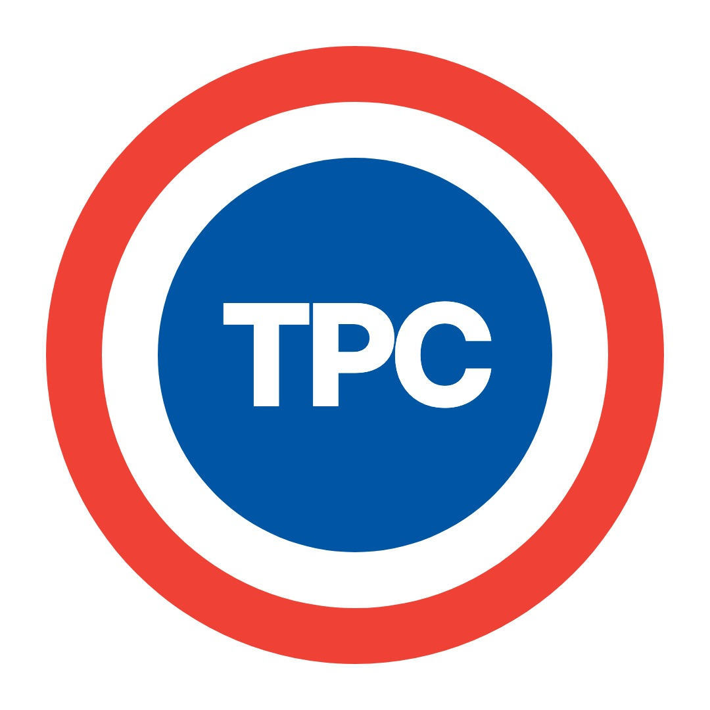

Ton Pouvoir Citoyen
Les pétitions déposées sur la plateforme de l'Assemblée nationale, relayées en texte intégral, sans prise de position.
Le site est en préparation. En attendant, toutes les pétitions sont sur la plateforme officielle : petitions.assemblee-nationale.fr.
Sur Instagram : @tonpouvoircitoyen